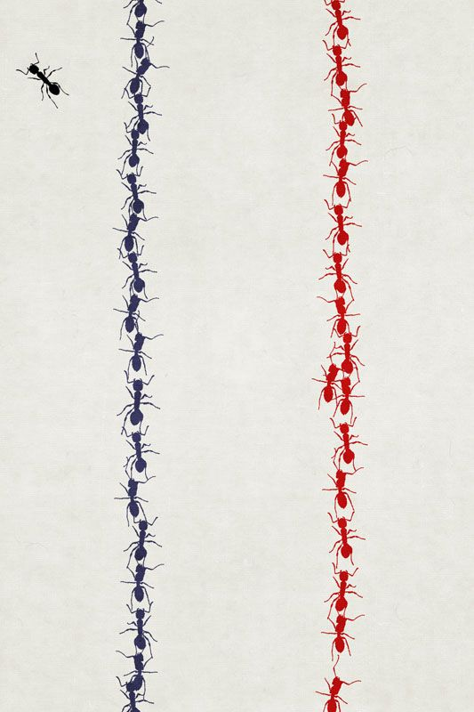
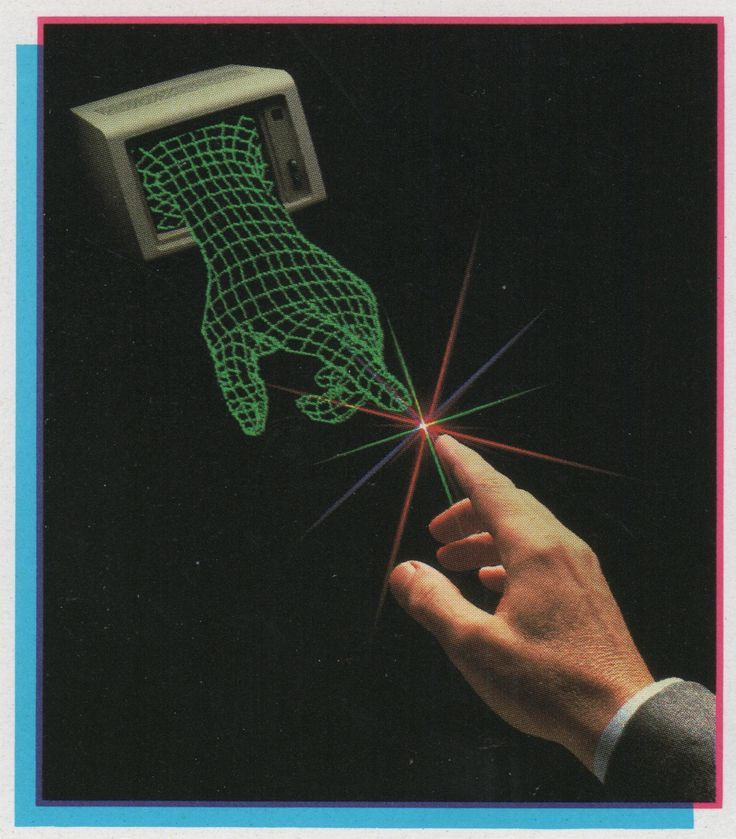

01 // THE STACK
The application writes into toe_send_buffer. On a flush the engine asks toe_segmenter for a segment bounded by cwnd, the peer window and free retransmission-table space. The bridge builds the header and computes the checksum while it reads, over a doubled buffer so segment N+1 is prepared while N is on the wire.
The bridge parses inbound TCP, verifies the checksum and offers it to the engine. A one-deep skid buffer latches it the cycle it is offered, whatever the FSM state. Pure ACKs drain even while the FSM waits on a TX segment.
02 // TWO MACS ON THE WIRE
00:0a:35:00:01:02 > bc:e9:2f:a1:8e:f6, IPv4, length 1514 192.168.50.60.63676 > 192.168.50.10.8081: Flags [P.], seq 1460:2920, length 1460
00:0a:35 is the Xilinx OUI; bc:e9:2f is the host NIC. Two distinct MACs, not loopback. Taking the host link down mid-transfer halted the stream at once, and every source in build_toe.tcl greps clean for zynq_ultra_ps_e, processing_system and PS8.
Passive open now works too: 40 of 40 sequential inbound connections accepted.
03 // 0.02 → 930 Mbps
Inline checksum. Start the checksum at accept time and feed it words as bytes arrive, overlapping the ~740-clock walk with the 1460-clock read.
Double buffering. Fill and send in separate processes over twice the buffer. One clock under line rate.
D21 RX starvation fix. Skid buffer, un-gated RX branch, in-freeze pure-ACK drain. Without it, step 2 reached 569 Mbps and killed the connection at 70–130 MB, every run.

04 // WHAT THE CAPTURE PROVES
05 // WHAT THIS IS NOT
$ grep -r feature rtl/ SACK (RFC 2018) ........ none window scale (RFC 7323) none 64 KB cap timestamps / PAWS ...... none Nagle (RFC 896) ........ none delayed ACK ............ none keepalive .............. timer slot, no policy IP fragmentation ....... none
Single connection: no session table. RFC compliance measured on the wire is 10 PASS / 2 FAIL. Regression runs 46 pass / 2 fail / 1, both failures pre-existing on baseline RTL.
WIN_LIMIT is a deployment constant at 8192; raising it to 32768 changed nothing, because the board is the sender. Bouncing the host NIC can drop the SGMII carrier; budget one reflash after any link interruption.
A 64-bit datapath on 10GBASE-R. Phase 2 of 5: tree and 10G substrate in progress, nothing widened yet. The 1G design closes at +0.225 ns over 237,022 endpoints at 8.000 ns; 156.25 MHz native means finding 1.6 ns.
